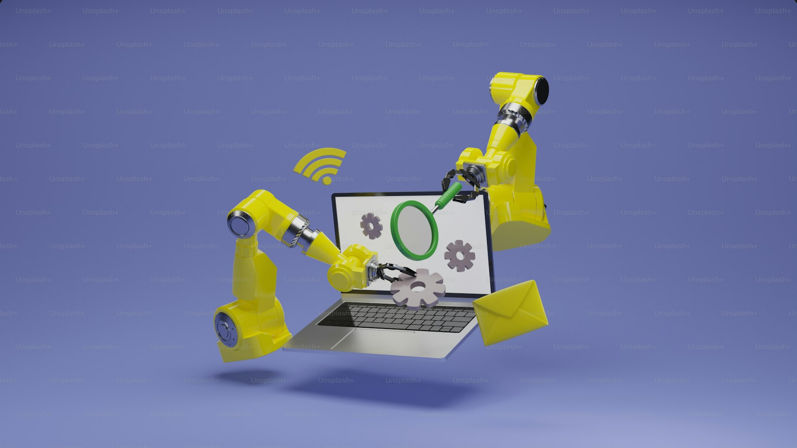
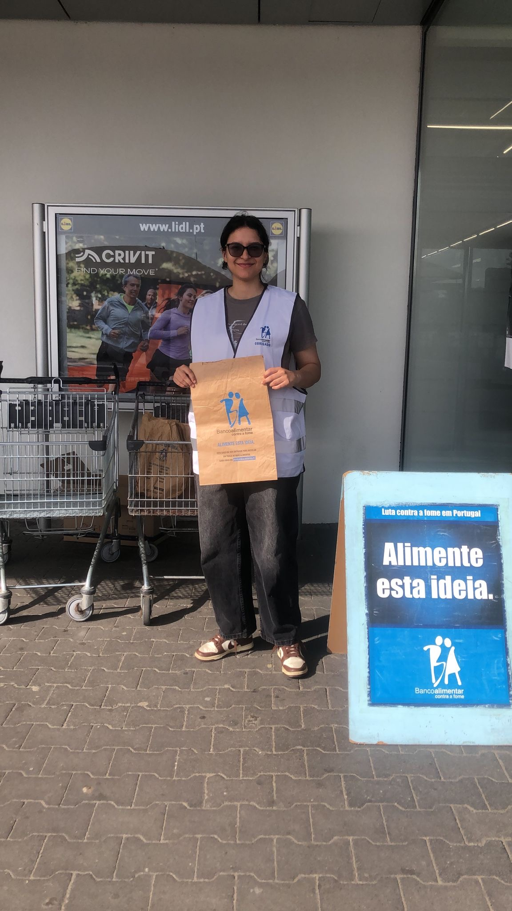

Olá! Eu sou Sara Oliveira
Estudante de Engenharia Informática. Interessa-me Cyber Security, Python e Data Science. Este portfólio reúne projetos, competências e o que me move além do código.
Destaques
- Procurando estágio e certificações em Cyber Security

Competências & Formação
Conhecimentos técnicos e experiências que venho desenvolvendo durante a licenciatura e a minha jornada profissional.
Stack Técnica
As ferramentas e linguagens que mais utilizo no dia a dia.
Experiência em automação, análise de dados e controlo de versões.
Formação & Experiência
- Licenciatura em Engenharia Informática — (em curso)
- Colaborador no McDonald’s Beja — desde 2023
O trabalho no McDonald’s tem-me ajudado a desenvolver competências interpessoais, gestão de tempo, trabalho em equipa e foco sob pressão — qualidades que aplico também no contexto académico e tecnológico.
Projetos selecionados
Uma amostra prática do meu trabalho e das competências que venho desenvolvendo.

AutoOrganizer
Aplicação desenvolvida para automatizar tarefas e organizar informações de forma eficiente. O projeto foca-se na praticidade e usabilidade, demonstrando competências em Python, Automoção e boas práticas de código.
🔗 Ver no GitHubNovos projetos em desenvolvimento... 🚀
Mais sobre mim
Interesses e vivências que fortalecem as minhas soft skills e contribuem para o meu crescimento pessoal e profissional.
Voluntariado

Atuei como voluntária no Banco Alimentar Contra a Fome, colaborando nas campanhas de recolha de alimentos. Essa experiência reforçou a empatia, o trabalho em equipa e o compromisso com causas sociais.
Interesses e Hobbies
Gosto de aprender continuamente e explorar novas tecnologias. Nos meus tempos livres, gosto de praticar corrida e de ouvir música, atividades que me ajudam a manter o equilíbrio e a criatividade.
CV & Contacto
O portfólio complementa o currículo — não é uma cópia literal.